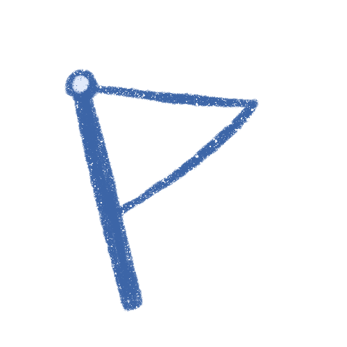

Education
University of California, Irvine, CA
Ph.D., Informatics
Human-Computer Interaction,
Expected Graduation: June 2027 (Advanced to Candidacy)
University of Michigan, Ann Arbor, MI
Master of Science, Information
User Experience Research and Design,
May 2019
San Jose State University, San Jose, CA
Bachelor of Science, Psychology (Honors)
Mathematics Minor,
May 2017

Mentorship Experience
- Yuna L., Informatics master's student, PITCH Lab (Ongoing)
- Christine W., Psychology undergraduate student, TEAM Lab
- Athena R. V., Informatics undergraduate student, PITCH Lab (Completed honors thesis)
- Nai-Yu C., Informatics master's student, PITCH Lab (Completed and published master's thesis)
- Jia-Yu Y., Informatics master's student, PITCH Lab (Completed and published master's thesis)
- Alumni mentor for SJSU undergraduate students: Monique T., Rio Y. M., Leilani T., Chi N., Charlene K., and Nora S.
Reviewer Experience
- 2026: Social Sciences & Humanities Open, ICWSM, Mensch und Computer, Interactive Health, DIS, CHI
- 2025: UIST, DIS, JMIR Mental Health, CHI, CSCW, HRI
- 2024: CHI, Frontiers in Psychiatry (Digital Mental Health), International Journal of Human-Computer Interaction
- 2023: CSCW
Leadership Experience
- Co-President, The Equity and Action Special Interest Group (SIG) at ISRII, 08/2024 – 08/2026
- President, Informatics Graduate Student Association (IGSA) at the University of California, Irvine, 04/2024 – 04/2025
- Communications Chair, Informatics Graduate Student Association (IGSA) at the University of California, Irvine, 03/2023 – 04/2024
- Southern California Regional Planning Committee Member, For Inspiration and Recognition of Science and Technology (FIRST), 08/2022 – Present
- FRC Judge Advisor, For Inspiration and Recognition of Science and Technology (FIRST), 08/2022 – Present
- Coach/Mentor for students aged 8 to 18, For Inspiration and Recognition of Science and Technology (FIRST), 08/2014 – 08/2023
- Lead Graduate Student Instructor, University of Michigan, 09/2018 – 05/2019
- President, Learning Education Technology at the School of Information (LETSI) at the University of Michigan, 09/2018 – 05/2019
Volunteer Experience
- Judge for Project Team Demos, Design at UCI, 03/2025 – Present
- Judge for Design Exposition, University of Michigan Ann Arbor, 03/2024 – Present
- Member of Communications Committee, Society of Digital Mental Health (SDMH), 04/2024 – Present
- Event Volunteer (Judge, Referee, Announcer, etc.), For Inspiration and Recognition of Science and Technology (FIRST), 09/2014 – Present
- Graphic Designer, Asian Mental Health Collective (AMHC), 01/2023 – 08/2025
- Research Team Member, Asian Mental Health Collective (AMHC), 06/2022 – 08/2025
- Newsletter Designer, National Alliance of Mental Illness Washtenaw County (NAMI-WC), 06/2021 – 10/2025
- Student Volunteer: DIS 2024, CHI 2024, CSCW 2023, DIS 2022
Awards and Honors
- Dissertation Completion FellowshipUniversity of California Irvine, School of Informatics and Computer Science
- Grad Slam 2024 Semi-finalist, University of California Irvine, Graduate Division
- Mental Health for College Students Hackathon 2022 Finalists, University of California Irvine, ANTrepreneurship Center
- Chair Award 2021, University of California Irvine
- Graduation commencement speaker , University of Michigan School of Information 2019 spring commencement
- Half merit scholarship, University of Michigan School of Information
- Volunteer od the Year 2017, Western Region Robotics Forum
- President scholar 2016 and 2017, San Jose State University
- NSF Research Experiences of Undergraduate Fellowship 2016 and 2017, at San Jose State University
Skills
Language (Fluent, excluding English)
- Chinese: Mandarin/Cantonese
- Japanese: Conversational
- HTML/CSS
Application (Intermediate/Advanced)
- Figma/FigJam
- Sketch/InVision
- Voice Flow
- Microsoft Office
Application (Proficient)
Research Method
- Affinity Diagram
- Card Sorting
- Interview/Contextual Inquiry
- Participatory Design
- Personas/Empathy Map
- Survey Design and Analysis
- Usability Testing